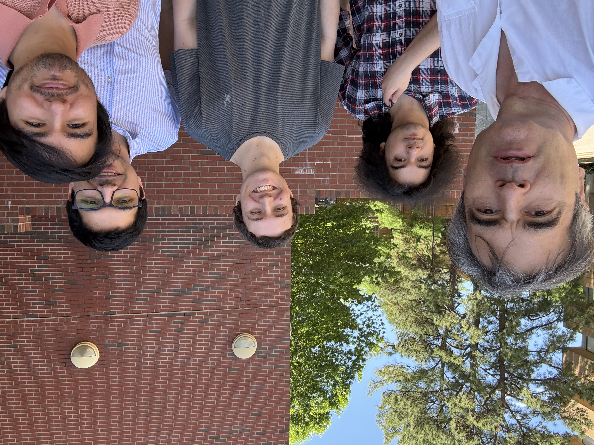
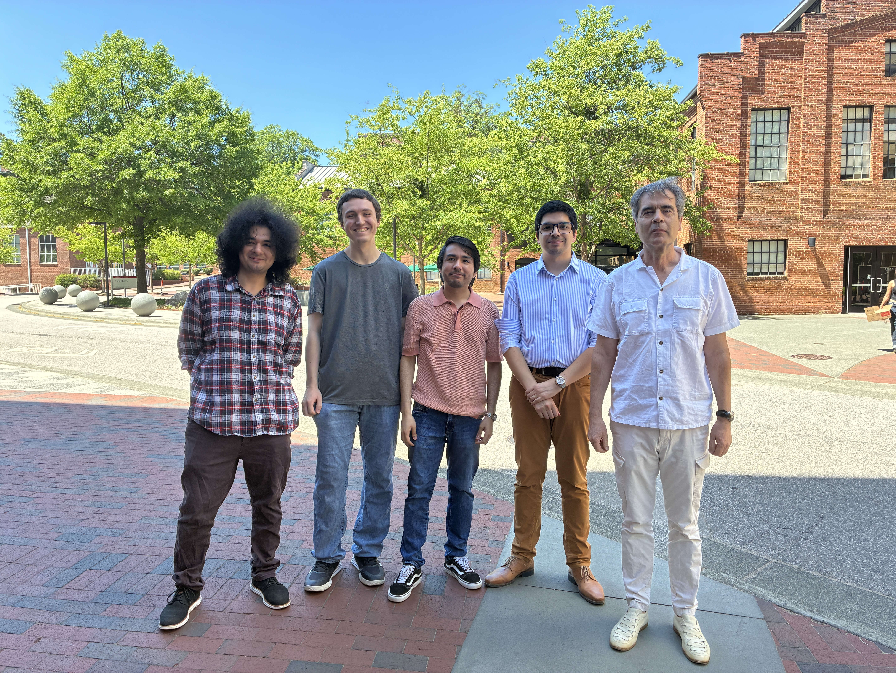

|
[C44] |
H. H. Bauschke, P. L. Combettes, and D. R. Luke,
A new generation of iterative transform algorithms for phase
contrast tomography,
Proceedings of the IEEE International Conference on Acoustics, Speech,
and Signal Processing, vol. 4, pp. 89–92.
Philadelphia, PA, March 19–23, 2005.
|
2004
|
[J38] |
P. L. Combettes,
Solving monotone inclusions via compositions of nonexpansive averaged
operators,
Optimization,
vol. 53, no. 5–6, pp. 475–504, December 2004.
[pdf]
|
|
[J34] |
H. H. Bauschke, P. L. Combettes, and D. R. Luke,
Finding best approximation pairs relative to two closed convex sets
in Hilbert spaces,
Journal of Approximation Theory,
vol. 127, no. 2, pp. 178–192, March 2004.
[pdf]
|
2003
2002
|
[J27] |
P. L. Combettes and J. Luo,
An adaptive level set method for nondifferentiable constrained image
recovery,
IEEE Transactions on Image Processing,
vol. 11, no. 11, pp. 1295–1304, November 2002.
[pdf]
|
|
[J26] |
H. H. Bauschke, P. L. Combettes, and D. R. Luke,
Phase retrieval, error reduction algorithm, and Fienup variants: A
view from convex optimization,
Journal of the Optical Society of America A,
vol. 19, no. 7, pp. 1334–1345, July 2002.
[pdf]
|
2001
|
[J25] |
H. H. Bauschke, J. M. Borwein, and P. L. Combettes,
Essential smoothness, essential strict convexity, and
Legendre functions in Banach spaces,
Communications in Contemporary Mathematics,
vol. 3, no. 4, pp. 615–647, 2001.
[pdf]
|
|
[J24] |
H. H. Bauschke and P. L. Combettes,
A weak-to-strong convergence principle for Fejér-monotone
methods in Hilbert spaces,
Mathematics of Operations Research,
vol. 26, no. 2, pp. 248–264, May 2001.
[pdf]
|
|
[J23] |
P. L. Combettes,
On the numerical robustness of the parallel projection method in
signal synthesis,
IEEE Signal Processing Letters,
vol. 8, no. 2, pp. 45–47, February 2001.
[pdf]
|
|
[E01] |
P. L. Combettes, Fejér-monotonicity in convex optimization, in
Encyclopedia of Optimization
(C. A. Floudas and P. M. Pardalos, Eds.),
vol. 2, pp. 106–114.
Springer-Verlag, New York, 2001.
[pdf]
|
2000
1999
|
[C33] |
J. Luo and P. L. Combettes, A subgradient projection algorithm for
nondifferentiable signal recovery,
Proceedings of the IEEE Workshop on Nonlinear Signal and Image
Processing,
pp. 452–456. Antalya, Turkey, June 20–23, 1999.
|
1998
|
[C32] |
P. L. Combettes and J. C. Pesquet,
Nonlinear multiresolution image analysis via convex projections,
Proceedings of the IEEE International Conference on Image
Processing,
vol. 2, pp. 762–765. Chicago, IL, October 4–7, 1998.
|
|
[C31] |
P. L. Combettes and P. Bondon, Constrained pulse shape synthesis for
digital communications,
Proceedings of the European Signal Processing Conference,
pp. 573–576. Island of Rhodes, Greece, September 8–11, 1998.
|
|
[C30] |
P. L. Combettes, A block-iterative quadratic signal recovery algorithm,
Proceedings of the IEEE International Conference on Acoustics, Speech,
and Signal Processing, vol. 5, pp. 2917–2920.
Seattle, WA, May 12–15, 1998.
|
1997
|
[J18] |
P. L. Combettes,
Convex set theoretic image recovery by extrapolated iterations of
parallel subgradient projections,
IEEE Transactions on Image Processing,
vol. 6, no. 4, pp. 493–506, April 1997.
[pdf]
|
|
[C29] |
P. L. Combettes and P. Bondon, Hard-constrained signal feasibility
problems,
Proceedings of the IEEE International Conference on Acoustics, Speech,
and Signal Processing,
vol. 4, pp. 2569–2572. Munich, Germany, April 21–24, 1997.
|
1996
|
[J17] |
P. L. Combettes and T. J. Chaussalet,
Combining statistical information in set theoretic estimation,
IEEE Signal Processing Letters,
vol. 3, no. 3, pp. 61–62, March 1996.
[pdf]
|
|
[C28] |
P. L. Combettes, Generalized convex set theoretic image recovery,
Proceedings of the IEEE International Conference on Image Processing,
vol. 2, pp. 453–456. Lausanne, Switzerland, September 16–19, 1996.
|
|
[C27] |
P. L. Combettes, Bounded-error models in inverse problems,
Proceedings of the 1996 IMACS/IEEE MultiConference on Computational
Engineering in Systems Applications, vol. 2, pp. 1023–1027.
Lille, France, July 9–12, 1996.
|
|
[C26] |
P. L. Combettes and J. C. Pesquet, Convex multiresolution analysis,
Proceedings of the IEEE International Symposium on
Time-Frequency and Time-Scale Analysis, pp. 301–304.
Paris, France, June 18–21, 1996.
|
|
[C25] |
H. Puh and P. L. Combettes, Operator theoretic image coding,
Proceedings of the IEEE International Conference on Acoustics, Speech,
and Signal Processing,
vol. 4, pp. 1863–1866. Atlanta, GA, May 7–10, 1996.
|
|
[C24] |
H. Puh and P. L. Combettes, Set theoretic vector quantization,
Proceedings of the Ninth IEEE Workshop on Image and Multidimensional
Signal Processing,
pp. 48–49. Belize City, Belize, March 3–6, 1996.
|
1995
|
[C23] |
P. L. Combettes, Constrained image recovery in a product space,
Proceedings of the IEEE International Conference on Image Processing,
vol. 2, pp. 25–28. Washington, DC, October 23–26, 1995.
|
|
[C22] |
P. L. Combettes,
Restauration ensembliste d'images par itérations
parallèles extrapolées de sous-gradients,
Proceedings of the 15th GRETSI Symposium,
pp. 447–450. Juan-les-Pins, France, September 18–22,
1995.
[pdf]
|
|
[C21] |
P. L. Combettes and P. Bondon, Adaptive linear filtering with convex
constraints,
Proceedings of the IEEE International Conference on Acoustics,
Speech, and Signal Processing,
vol. 2, pp. 1372–1375. Detroit, MI, May 8–12, 1995.
|
1994
|
[C20] |
P. L. Combettes,
Convex set theoretic image recovery via chaotic iterations
of approximate projections,
Proceedings of the IEEE International Conference on Image Processing,
vol. 3, pp. 182–186. Austin, TX, November 13–16, 1994.
|
|
[C19] |
P. L. Combettes and T. J. Chaussalet, Selecting statistical information
in set theoretic signal processing,
Proceedings of the Seventh IEEE Workshop on Statistical Signal and
Array Processing,
pp. 55–58. Québec City, Canada, June 26–29, 1994.
|
|
[C18] |
P. L. Combettes, Set theoretic signal processing,
Proceedings of the Seventh IEEE Workshop on Statistical Signal and
Array Processing,
pp. 1–6. Québec City, Canada, June 26–29, 1994.
|
|
[C17] |
P. L. Combettes and H. Puh, A fast parallel projection algorithm for
set theoretic image recovery,
Proceedings of the IEEE International Conference on Acoustics, Speech,
and Signal Processing,
vol. 5, pp. 473–476. Adelaide, Australia, April 19–22, 1994.
|
|
[C16] |
J. C. Pesquet and P. L. Combettes,
Synthèse ensembliste d'ondelettes,
Proceedings of the Conference on Time-Frequency, Wavelets, and
Multiresolution, pp. 14.1–14.10.
Lyon, France, March 9–11, 1994.
|
1993
|
[J09] |
P. L. Combettes, The foundations of set theoretic estimation,
Proceedings of the IEEE,
vol. 81, no. 2, pp. 182–208, February 1993.
[pdf]
|
|
[C15] |
P. L. Combettes and T. J. Chaussalet,
Estimation en présence de modèles incertains:
Sélection de formulations ensemblistes,
Proceedings of the 14th GRETSI Symposium,
pp. 205–208. Juan-les-Pins, France, September
13–16, 1993.
[pdf]
|
|
[C14] |
P. L. Combettes, A simultaneous projection method for inconsistent signal
and image feasibility problems,
Proceedings of the Eighth IEEE Workshop on Image and Multidimensional
Signal Processing,
pp. 32–33. Cannes, France, September 8–10, 1993.
|
|
[C13] |
P. L. Combettes and H. Puh, Parallel projection methods for set theoretic
signal reconstruction and restoration,
Proceedings of the IEEE International Conference on Acoustics, Speech,
and Signal Processing,
vol. 5, pp. 297–300. Minneapolis, MN, April 27–30, 1993.
|
|
[C12] |
P. Bondon, P. L. Combettes, and B. Picinbono, Volterra prediction models
and higher order whiteness,
Proceedings of the IEEE International Conference on Acoustics, Speech,
and Signal Processing,
vol. 4, pp. 212–215. Minneapolis, MN, April 27–30, 1993.
|
1992
|
[C11] |
J. W. Silverstein and P. L. Combettes, Large dimensional random matrix
theory for signal detection and estimation in array processing,
Proceedings of the Sixth IEEE Workshop on Statistical Signal and
Array Processing,
pp. 276–279. Victoria, BC, Canada, October 7–9, 1992.
|
|
[C10] |
P. L. Combettes and W. W. Edmonson, What is a good estimate?,
Proceedings of the European Signal Processing Conference,
pp. 713–716. Brussels, Belgium, August 24–27, 1992.
|
|
[C09] |
P. L. Combettes, M. Benidir, and B. Picinbono, A general framework for the
incorporation of uncertainty in set theoretic estimation,
Proceedings of the IEEE International Conference on Acoustics, Speech,
and Signal Processing,
vol. 3, pp. 349–352. San Francisco, CA, March 23–26, 1992.
|
1991
|
[C08] |
P. L. Combettes and T. J. Chaussalet, Critères de qualité en
estimation ensembliste,
Proceedings of the 13th GRETSI Symposium,
pp. 249–252. Juan-les-Pins, France, September 16–20, 1991.
|
|
[C07] |
P. L. Combettes and M. R. Civanlar, The foundations of set theoretic
estimation,
Proceedings of the IEEE International Conference on Acoustics, Speech,
and Signal Processing,
pp. 2921–2924. Toronto, Canada, May 14–17, 1991.
|
1990
|
[C06] |
P. L. Combettes and H. J. Trussell, Set theoretic
autoregressive spectral estimation,
Proceedings of the Fifth IEEE ASSP Workshop on Spectrum Estimation and
Modeling,
pp. 261–264. Rochester, NY, October 10–12, 1990.
|
|
[C05] |
P. L. Combettes and H. J. Trussell, New methods for the
synthesis of set theoretic estimates,
Proceedings of the IEEE International Conference on Acoustics, Speech,
and Signal Processing,
pp. 2531–2534. Albuquerque, NM, April 3–6, 1990.
|
1989
|
[C04] |
P. L. Combettes and H. J. Trussell,
General order moments in set theoretic estimation,
Proceedings of the IEEE International Conference on Acoustics,
Speech, and Signal Processing,
pp. 2531–2534. Glasgow, Scotland, May 23–26, 1989.
|
|
[TR02] |
P. L. Combettes, A new inequality in abstract Lp
spaces,
Center for Communications and Signal Processing,
North Carolina State University, 1989.
[pdf]
|
1988
|
[C03] |
P. L. Combettes and H. J. Trussell, Stability of the
linear prediction filter: A set theoretic approach,
Proceedings of the IEEE International Conference on Acoustics,
Speech, and Signal Processing,
pp. 2288–2291. New York, NY, April 11–14, 1988.
|
|
[TR01] |
P. L. Combettes, The mathematical foundations of projection
techniques and their applications to set theoretic estimation.
Technical report, Center for Communications and Signal Processing,
North Carolina State University, 1988.
[pdf]
|
1987
|
[C02] |
P. L. Combettes and H. J. Trussell, Modèles et
algorithmes en vue de la restauration numérique d'images rayons-X,
Proceedings of MARI-Cognitiva Electronic Image,
pp. 146–151. Paris, France, May 18–22, 1987.
[pdf]
|
|
[C01] |
H. J. Trussell and P. L. Combettes, Considerations for the
restoration of stochastic degradations,
Proceedings of the IEEE International Conference on Acoustics,
Speech, and Signal Processing,
pp. 1209–1212. Dallas, TX, April 6–9, 1987.
|
Recent conference talks
- The pervasiveness of proximal point iterations – with a proximal analysis of neural networks,
Fifth Bay
Optimization Meeting.
Santa Cruz, CA, May 17, 2019.
- Méthodes proximales pour la régression statistique en
grande dimension via des fonctions perspectives,
Journées Annuelles du GdR MOA.
Saint-Anne, Guadeloupe, France, November 20–24, 2016.
- Méthodes asynchrones d'éclatement d'opérateurs
avec balayage par blocs,
Conférence SMAI-MODE 2016.
Toulouse, France, March 23–25, 2016.
- Splitting techniques in the face of huge problem sizes:
Block-coordinate approaches,
Optimization and Big Data 2015.
Edinburgh, Scotland, May 6–9, 2015.
- Algorithmes proximaux pour les problèmes d'optimisation
structurés,
Horizon Maths Conference.
La Défense, France, December 19–20, 2012.
- Décomposition d'opérateurs pour les formulations
variationnelles lisses et non-lisses en traitement de l'image,
Journées Mathématiques de l'Image.
Nice, France, January 12–13, 2006.
Events: conference and seminar organization
-
Nonlinear Analysis Seminar
Department of Mathematics, North Carolina State University
[web]
-
VIASM Summer School on Optimization and Decision
Theory
Quy Nhón, Vietnam, July 13–15, 2026.
[web]
-
Neuvièmes Journées Franco-Chiliennes d'Optimisation
Perpignan, France, 29 juin–1er juillet 2022.
[web]
-
3rd Workshop on Operator Splitting Methods in Data Analysis
Flatiron Institute, New York, USA,
March 2020
[web]
-
2nd Workshop on Operator Splitting Methods in Data Analysis
New York, USA, March 2019
[web]
-
1st Workshop on Operator Splitting Methods in Data Analysis
SAMSI, Research Triangle Park, USA, March 2018
[web]
-
French Days on Optimization & Decision
Science
Autrans, France, March 2018
[web] [poster]
-
GdR MOA
Guadeloupe, France, Novembre 2016
[web]
-
Data Science 2015
Paris, France, Juillet 2015
[web]
-
Ottimizzazione e Processi Dinamici in Apprendimento
istico e Problemi Inversi
Sestri Levante, Italia, Settembre 2014
[web]
-
Algorithms and Dynamics for Games and Optimization
Playa Blanca, Chile, October 2013
[web]
-
Optimization, Games, and Dynamics
Paris, France, November 2011
[web]
-
Dynamiques, Optimisation et Apprentissage
Valparaiso, Chile, November 2010
[web]
-
Fixed-Point Algorithms for Inverse Problems in Science
and Engineering
Banff, Canada, November 2009
[web]
-
Approximation and Optimization in Image Restoration and
Reconstruction
Porquerolles, France, June 2009
[web]
-
Conférence sur l'Optimisation and la
Décision
Paris, France, Avril 2007
[web]
-
Mathematical Methods for Multi-Channel
Image Processing
Beijing, China, July 2006
[web]
-
Mathématiques du Traitement de
l'Image
Hanoi, Vietnam, Septembre 2004
[web]
-
Mathématiques de l'Optimisation et de la
Décision
Le Havre, France, Mars 2004
[web]
-
Monotone Operators and Applications
Nice, France, February 2003
[web]
-
CEMRACS
Luminy, France, Juillet 2002
[web]
Teaching
-
MA515 Functional Analysis,
Spring 2027
[syllabus]
-
MA716 Advanced Functional Analysis,
Fall 2026
[syllabus]
-
MA715 Measure and Integration Theory,
Spring 2026
[syllabus]
-
MA542 Convex Optimization Methods in Data
Science,
Spring 2026
[syllabus]
-
MA719 Vector Space Methods in Systems
Optimization – Optima and Equilibria,
Fall 2025
[syllabus]
-
MA493/MA591 Introduction to Hilbert Spaces,
Fall 2024
[syllabus]
-
MA532 Dynamical Systems and Ordinary Differential
Equations,
Spring 2024
[syllabus]
-
MA797 Convex Analysis, Fall 2021
[syllabus]
Academic genealogy
Mathematics Genealogy Project
-
Sharaf al-Dīn al-Ṭūsī
-
Kamāl al-Dīn Ibn Yūnus
-
Nasir al-Dīn al-Ṭūsī
-
Shams al‐Dīn al‐Bukhārī (Maragheh Observatory)
-
Gregory Chioniadis (Ilkhans Court at Tabriz, 1296)
-
Manuel Bryennios
-
Theodore Metochites (1315)
-
Gregory Palamas
-
Nilos Kabasilas (1363)
- Demetrios
Kydones
- Georgios
Plethon Gemistos (1380)
- Basilios
Bessarion (Mystras, 1436)
- Johannes
Argyropoulos (Università degli Studi di Padova, 1444)
- Marsilio
Ficino (Università degli Studi di Firenze, 1462)
- Angelo
Poliziano (Università degli Studi di Firenze, 1477)
- Scipione
Fortiguerra (Università degli Studi di Firenze, 1493)
- Girolamo
Aleandro (Università degli Studi di Padova, 1499)
-
Rutger Rescius (Université de Paris, 1513)
-
Johannes Winter von Andernach
(Université de Louvain, 1527)
-
Guillaume Rondelet (Université de Paris, 1538)
-
Felix Plater (Université de Montpellier, 1557)
- Petrus Ryff (Universität Basel, 1584)
- Emmanuel Stupanus (Universität Basel, 1613)
-
Nikolaus Eglinger (Universität Basel, 1660)
- Johann
Bernoulli (Universität Basel, 1690)
- Leonhard Euler (Universität Basel, 1726)
- Joseph-Louis Lagrange (Università di Torino, 1754)
- Siméon D. Poisson
(École Polytechnique, 1800)
- Michel Chasles (École Polytechnique, 1814)
- Hubert A. Newton (Yale University, 1850)
- E. Hastings Moore (Yale University, 1885)
- George D. Birkhoff (University of Chicago, 1907)
- Marshall H. Stone (Harvard University, 1926)
- William F. Eberlein (Harvard University, 1942)
- A. Wayne Wymore (University of Wisconsin-Madison, 1955)
- Bobby R. Hunt (University of Arizona, 1967)
-
H. Joel Trussell (University of New Mexico, 1976)
-
Patrick L. Combettes
(North Carolina State University, 1989)
- Hong
Puh (City University of New York, 1996)
-
Jian Luo
(City University of New York, 2000)
-
Sever A. Hirstoaga
(Université Pierre et Marie Curie, 2006)
-
Valérie R. Wajs
(Université Pierre et Marie Curie, 2007)
-
Thomas D. Capricelli
(Université Pierre et Marie Curie, 2008)
-
Luis M. Briceño-Arias
(Université Pierre et Marie Curie, 2011)
-
Bằng Công Vũ
(Université Pierre et Marie Curie, 2013)
-
Quang Văn Nguyễn
(Université Pierre et Marie Curie, 2015)
-
Lilian E. Glaudin
(Sorbonne Université, 2019)
-
Zev C. Woodstock
(North Carolina State University, 2021)
-
Minh N. Bùi
(North Carolina State University, 2021)
-
Diego J. Cornejo
(North Carolina State University, 2026)
-
Javier I. Madariaga
(North Carolina State University, 2026)
People


Left: PLC with Ph.D. students Vivar-Vargas, Mayrand, Madariaga, and
Cornejo, NC State, April 2026.
Current Ph.D. students
Former Ph.D. students
-
Javier I.
Madariaga,
North Carolina State University, 2026
Stochastic Iterations in Hilbertian Nonlinear
Analysis
-
Diego J. Cornejo,
North Carolina State University,
2026
Resolvent and Proximal Compositions: Theory
and Applications
-
Minh N. Bùi, North Carolina State University,
2021
The Warped Resolvent of a Set-Valued Operator: Theory
and Applications
-
Zev C. Woodstock, North Carolina State University,
2021
Construction of Functions from Nonlinear Transformations
-
Lilian E.
Glaudin, Sorbonne Université
(formerly Université Pierre et Marie Curie), 2019
Stratégies Multicouche, avec Mémoire, et
à Métrique Variable en Méthodes de Point Fixe
pour l'Éclatement d'Opérateurs Monotones et
l'Optimisation
(Strategies with Multiple Layers, Memory, and
Variable Metric in Fixed Point Methods for Monotone Operator
Splitting and Optimization)
-
Quang Văn Nguyễn, Université Pierre et Marie Curie, 2015
Méthodes d'Éclatement Basées sur
les Distances de Bregman pour les Inclusions Monotones Composites
et l'Optimisation
(Splitting Methods Based on Bregman Distances for Composite
Monotone Inclusions and Optimization)
-
Bằng Công Vũ, Université Pierre et Marie Curie, 2013
Inclusions Monotones en Dualité et Applications
(Monotone Inclusions in Duality and Applications)
-
Luis M. Briceño-Arias, Université Pierre et Marie Curie, 2011
Problèmes d'Inclusions Couplées :
Éclatement, Algorithmes et Applications
(Coupled Inclusions Problems: Splitting, Algorithms, and
Applications)
-
Thomas D. Capricelli, Université Pierre et Marie Curie, 2008
Algorithmes de Projections Convexes
Généralisées et Applications en Imagerie
Médicale
(Generalized Convex Projection Algorithms and Applications
in Medical Imaging)
-
Valérie R. Wajs, Université Pierre et Marie Curie, 2007
Décompositions et Algorithmes Proximaux pour
l'Analyse et le Traitement Itératif des Signaux
(Proximal Decompositions and Algorithms for Signal Analysis
and Iterative Signal Processing)
-
Sever A. Hirstoaga, Université Pierre et Marie Curie, 2006
Approximation et Résolution de Problèmes
d'Équilibre, de Point Fixe et d'Inclusion Monotone
(Approximation and Numerical Solution of Equilibrium, Fixed
Point, and Monotone Inclusion Problems)
-
Jian Luo, City University of New York, 2000
Non-Differentiable Constrained Signal Restoration by Subgradient Level Methods
-
Hong Puh, City University of New York, 1996
Operator Theoretic Image Coding
Nonlinear Analysis Thematic Group
[ web]
|